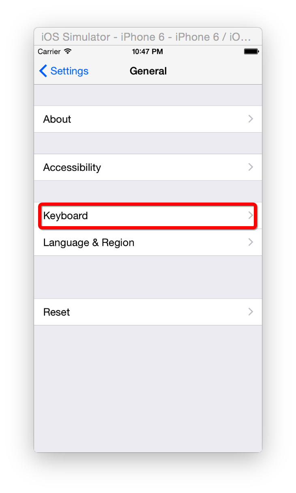
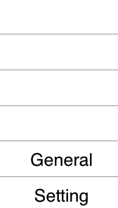

栈
栈是计算机中一种特殊的串列形式的数据结构（队列也是）。可以把它想象成数组。
栈的特点
LIFO：(last in first out)，后进先出原则。栈永远操作最上面的元素。
举个例子，桌子上的一摞书，后放上去，先取下来。
专业术语
- 栈顶：栈的顶部。
- 栈底：栈的底部。
- 栈顶元素：栈最顶部的元素。
- 栈底元素：栈最底部的元素。
- 入栈（压栈 push）：将元素放入栈顶。
- 出栈（pop）：将栈顶元素移除。
实际应用
在iOS开发中，有一个控件叫做导航栏控制器(UINavigationController)，其中有两个方法push与pop就是对栈的操作。
打开iPhone的设置界面我们可以看到此时的栈中有一个栈底元素Setting页面（同时也是栈顶）：

当点击General页面时：

此时General页面会进行入栈操作，成为新的栈顶元素：

继续点击Keyboards页面：
此时General页面会进行入栈操作，成为新的栈顶元素：
界面跳转层级是这样的：